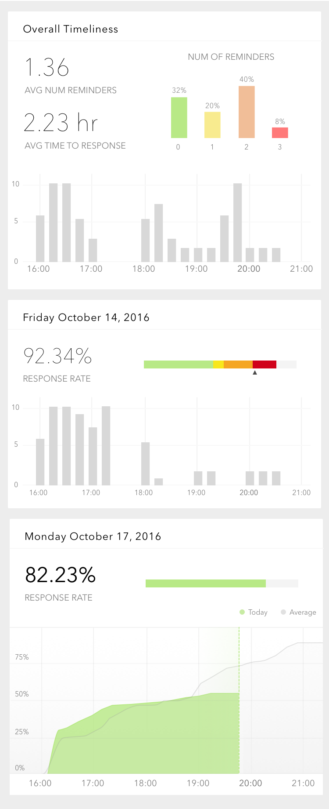

Survey Data Dashboard
YALE CENTER FOR EMOTIONAL INTELLIGENCE
As a followup to the SMS based data collection system I made for the Yale Center for Emotional Intelligence, I am in the process of creating a mobile dashboard to visualize the status of surveys.
The target audience was our research team, who had two main categories of needs.
Informational Needs: Our research team needed a way to see:
- How many people have responded today?
- How have response been historically?
- Are there any bugs or complaints?
- Enable/Disable existing surveys
- Send and receive anonymous individual messages to/from participants
- Add and remove users from the system
The previous iteration of this product enabled our research team to do all these things via text message commands, but in the next iteration, we wanted to make a more user friendly version that could be used without sending text messages (esp. for when members were abroad).
MOCKUPS
Here are some of the initial mockups. This project is still in progress!
